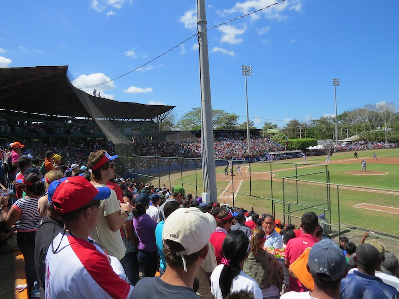
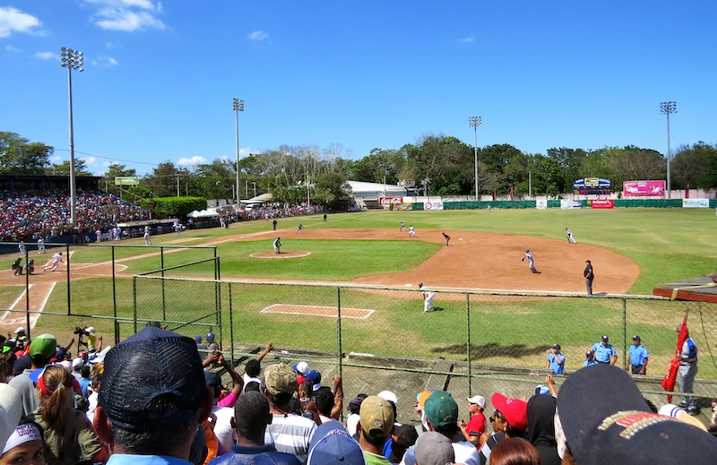
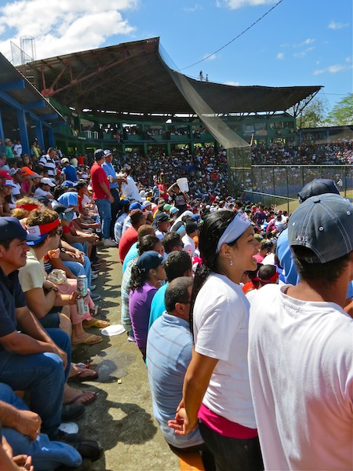
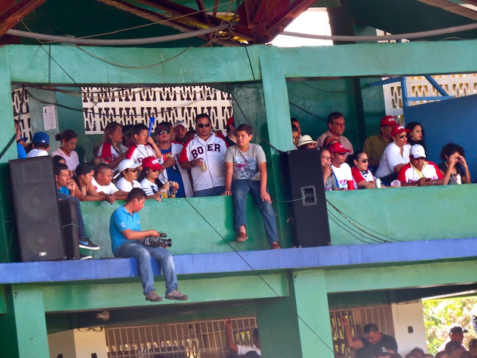
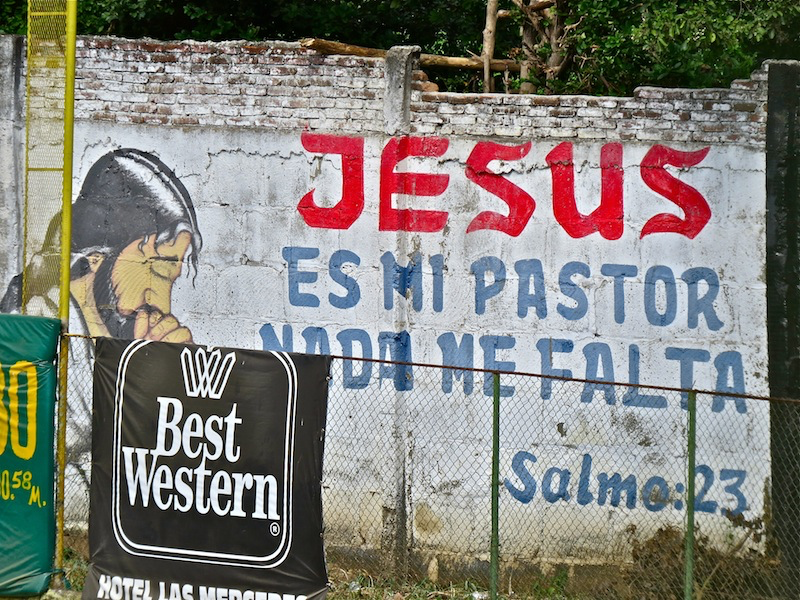
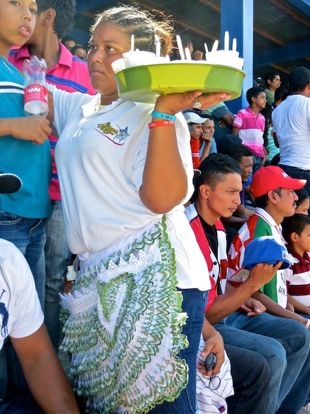
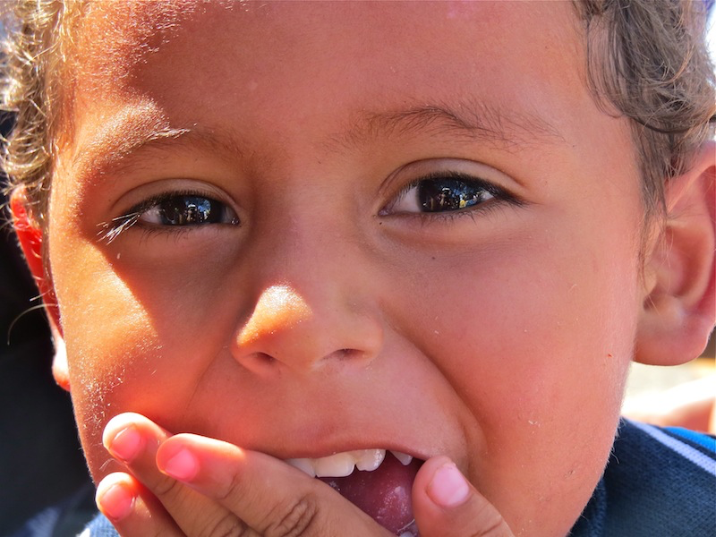
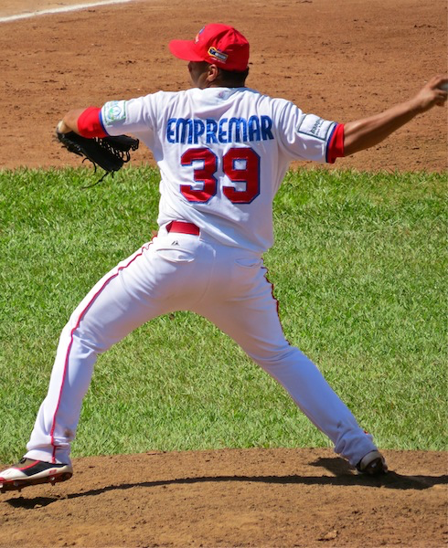
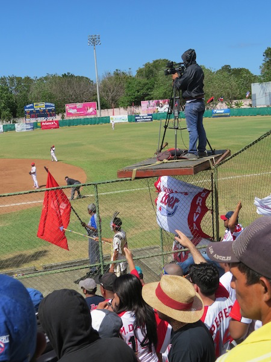
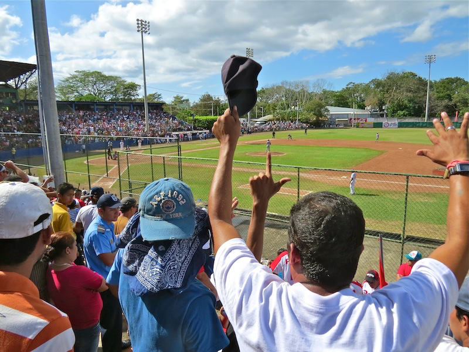

Unpublished Writing
Cultural Lessons from the Ballpark
January 21, 2014
"Baseball, it is said, is only a game. True. And the Grand Canyon is only a hole in Arizona."
Nicaraguans are passionate about their baseball. Baseball is their field of dreams, a door to batting a thousand, a chance to bring it on home. So, when we had an opportunity to go to our first professional baseball game in Nicaragua, how could I not jump at the chance to play ball? For me, it was a cultural experience, a pinch hitter slice of life moment. Covering all the cultural bases, I'd go to bat for Nicaraguans any day.

1. Nicaraguans don't take rain checks and neither do we.
We arrived at the dock early in the morning to catch the 9 am ferry to Rivas. The game started at 11 am, and we were sure we'd have plenty of time to buy our tickets. Due to circumstances beyond our control, the ferry broke down, and we had to wait for the 11 am Che. Meanwhile, Francisco (our friendly taxi driver), frantically called us, "Deborah, the tickets are almost sold out. I'll buy your tickets for you." Perfect! We'd miss the first few innings, but Francisco would save our seats. Later, we discovered that many of the spectators were buying one ticket, then reproducing the ticket at the local copy center. Nicaraguans definitely don't take rain checks, but neither do the gate attendants take fake tickets.
2. Time to play ball!
Nicaraguans are always ready to play ball in the game of life. Crowds never deter Nicas. No obstacle is too big, too overwhelming, too frightening. They are dare-devil risk-takers, scaling fences, hanging from rafters, without a thought of consequences.

The Yamil Rios Ugarte Stadium in Rivas holds, ballpark figure, about 5,000 people. We pushed our way through the throngs to find our cement bleacher seats, only to stand for most of the game. Time to play ball!
3. The bases are loaded everyday in Nicaragua.
When the stakes are high, and a chance presents itself to win, Nicaraguans go for the win. Life is one big baseball game. Not only in sports, but in their daily activities, politics, and with positive attitudes, they are winners.

4. Nicaraguans get thrown many curve balls, yet they persevere in style.
Nicaraguans are faced with something unexpected or out of the ordinary on a daily basis. They go with the flow in Nicaland. A family of the Managua Boers was sitting in the boxed seating area. Although their team was losing, they were having a grand time, laughing, drinking Tona, and blowing the annoying noise makers to cheer on their team.

5. Nicaraguans always get to first base with Jesus on their side.
Nicaragua is predominantly Catholic, and they party heavily with their patron saints in each town. So, it came as no surprise to me when Jesus dominated the advertisements at the stadium. Best Western was a close second.

6. Nicaragua brings in the heavy hitters to support the local parties.
I wondered what kind of food would be served at the baseball game. Hotdogs, corn dogs, popcorn? Nooooo! The heavy hitter street vendors arrived with buckets of cold beer, trays laden with fried chicken and cabbage salad, pork rinds smothered in cabbage salad, plantain chips splashed with vinegar, and refreshing homemade shaved ice with sweet leche dribbling down the sides. With their decorative frilly aprons, the heavy hitters scored a home run with the crowd.

7. It's easy to tell right off the bat, that the Nicaraguans love their children.
Children are the focus of the Nicaraguan society. Mothers, fathers, grandparents, aunts, uncles, everyone tends to the needs of their children first. Junior and I ate our way through the game. He was fascinated by Ron's white mustache and tugged on it to see if it would come off. Meanwhile, his parents laughed and gently distracted Junior.

8. Nicaraguans love to pitch their ideas.
Since most Nicas live in poverty, they are resourceful and creative with what they have. They play hardball with their bargaining skills. Francisco pitched an idea to us at the ball park. His taxi has over 200,000 miles on it. He needs a new taxi, but cars are prohibitively expensive for most Nicaraguans. "What if I could have someone buy a car for me in the United States and drive it to Nicaragua?" he pitched. "Let me see what I can find," I said.

9. Everyday it's a new ballgame.
Nicaraguans aren't easily discouraged. They have a remarkable ability to live in the moment. The Boers were down 16-7, but not discouraged. Their flags waved, their mascots chanted, their drums rolled.

10. Nicaragua is in a league of its own.
We jokingly call it "the land of the not quite right." This vivacious, colorful culture of people have fought wars, overcome adversity, and won my heart. By the way, the Rivas Gigantes trumped the Managua Boers 16-7. This was their first year to play professional ball. Their first baseman, Randall Simon, played for the Pittsburgh Pirates in 2003.

Rivas Gigantes are headed for the National Championship. I'm root, root, rooting for my home team. Bring it on home Nicaragua, my home.
This story is one of many. The full journey is in the book.
Get The Monkey Lady's Gift